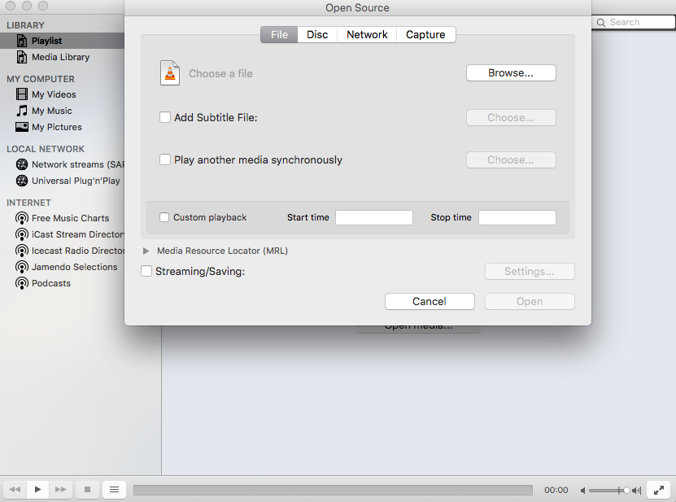
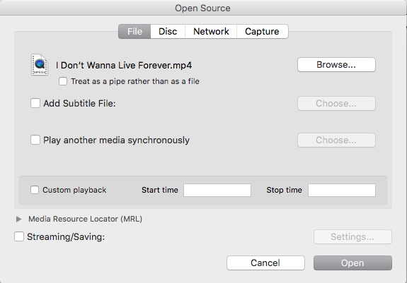

VLC - How to use
How To Use VLC / documentation version 1.0
Motivation #back to top
What is VLC
VLC stand out from other media player, and the reason for that is, the wide range of uses. One can use VLC to convert video file types and audio file types, synchronize video, audio and subtitles. It offers a variety of playback options and options to personalize the environment to use VLC effectively. VLC is also available for all OS’s and has the same features in all OS’s.
VLC can record peripheral equipment such as a microphone and webcam. This recording function allows for very simple video editing by recording snippets of a video, storing them and sequence the pieces in the order you need. Knowledge about the default keybinds is transferable to other software of similar characteristics.
Prerequisite
The instructions are written for users with a basic knowledge of the operating system, and a decent understanding of the english language.
How to install & open VLC #back to top
VLC already installed? - Skip the installation steps.
Installation options for Linux
- Option 1 - Install and open VLC with the terminal. [CTRL+SHIFT+T]
endrel@pc0001:~$ sudo apt-get install vlc
endrel@pc0001:~$ vlc &


Installation options for Windows
- Step 1 - Lorem the It is a long established fact that a reader ease read more about WordPress here.
- Step 2 - Lorem the It is a long established fact that a reader will be distracted.. Please read more about WordPress here.
- Step 3 - Lorem the It is a long established fact that a read.

Installation options for MacOS
- Step 1 - Lorem the It is a long established fact that a reader ease read more about WordPress here.
- Step 2 - Lorem the It is a long established fact that a reader will be distracted.. Please read more about WordPress here.
- Step 3 - Lorem the It is a long established fact that a read.
Playing a video file#back to top
Step 1 - On the VLC program press “Open media…”.

Step 2 - Click “Browse…” and you’ll need to navigate to the directory of your video file.
{kind=link}
Step 3 - Choose your video file and press “Open”.

Step 4 - Press “Open” and your Video file will start playing.
{kind=link}
Adding subtitles to video file#back to top
Step 1 - Click the dropdown-menu [Subtitles] in the toolbar, select “Add subtitle file…”.

Step 2 - The directory where your current Vide file is located will pop up, navigate to where your subtitle file is, choose it and press “Open”.

Step 3 -The video will start playing with the Subtitles. If the subtitles and the video are not in sync then we will need to adjust the subtitle by delaying it or playing it ahead.
Step 4 - Navigate to the Window tab above your screen while the video is playing and click track synchronization.

Step 5 - A small window will appear, chang the values of “Subtitle track synchronization” If the Subtitle is delayed then enter the number of seconds it’s delayed in negative. In this case it’s delayed by 2 seconds so enter “-2” and press Enter on your keyboard as it will apply the changes.

Keybinds & shortcuts#back to top
VLC keybinds
- Toggle VLC toolbars: [CTRL] + [H]
- Properties and settings: [CTRL] + [P]
Playback keybinds
- Playlists and library: [CTRL] + [L]
- Browse local files: [CTRL] + [O]
- Play / pause video: [SPACE]
- Mute sound: [CTRL] + [M]
- Volume control: [CTRL] + [ARROW UP / DOWN]